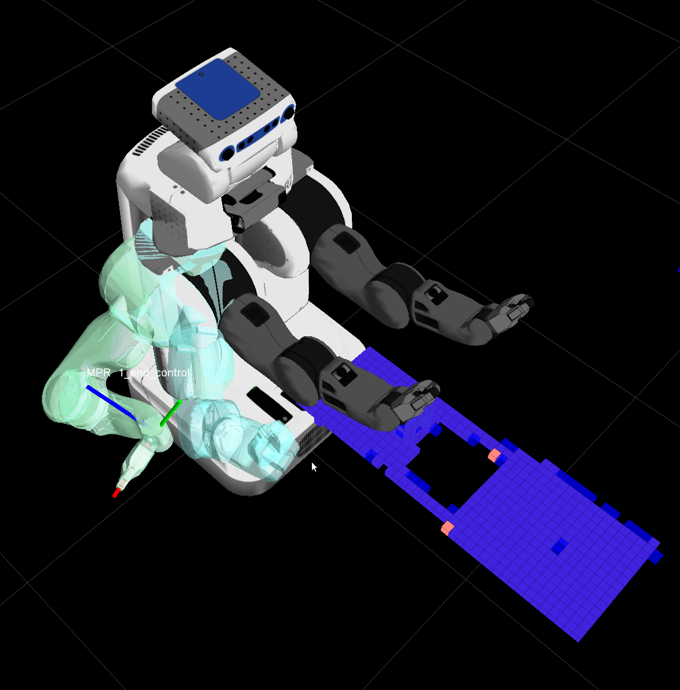

Ken Anderson
Ken Anderson Avidbots
At Avidbots, I wrote the software framework for two large-scale commercial floor-cleaning robots. This framework includes components for motion planning, communication, visualization, live view, and building. The motion planner encompasses the most complexity, containing a complete coverage planning algorithm, dynamic and static constraints, and dynamic obstacle avoidance. Avidbots was part of the 2014 Haxlr8r incubator and a semifinalist in the Robot Launch 2014 startup competition.
PR2
At Willow Garage, I improved the arm navigation stack by gathering statistics for comparing motion-planning algorithms; creating a very fast time parametrization algorithm that enforces dynamic constraints (velocity and acceleration) on a given trajectory; and improving distance field calculations by using incremental updates. The filter and incremental updates improved the speed of the existing components by 100-fold and 30-fold, respectively. This work is now a key component in the trajectory planning portion of the open source ROS (Robot Operating System) and MoveIt library, which is used by over 65 robots. For more information, see this blog post.
Space Station Remote Manipulator System
At Queen's University, I worked in the Robotics and Computer Vision Laboratory under the supervision of Dr. Michael Greenspan. I implemented Greenspan's patented collision detection algorithm and visualization system for use with MD Robotics' SSRMS (aka. Canadarm2®). This technique used specialized representations of objects (spheres and voxels) in order to perform real-time collision detection on an embedded system. Results were published Symposium on Robot Design, Dynamics and Control, 2004.
Deep Green
At Queen's, the majority of my time was spent on Deep Green™, a robot designed to play pool. I was involved in multiple aspects of the project. I used image processing techniques to localize the pool balls on the surface of the table. I implemented lighting strategies to minimize shadows affecting the computer vision. I investigated a new calibration technique for a local, cue-mounted camera. Additionally, I developed a simulated environment to test out my AI shot strategies. We were featured on the the Discovery Channel (link no longer available), Slashdot, and YouTube (twice).
Kato
At the University of Alberta, I again had an opportunity to work on a robotics research project. This time our team modified Kato™, a robotic Segway, to geocache in a park (navigate from one GPS location to another). My particular task involved accessing the drivability of terrain, which I determined through structured crash-tests. Our final field test was shown again on the Discovery Channel (link no longer available) and the Edmonton Journal (twice).